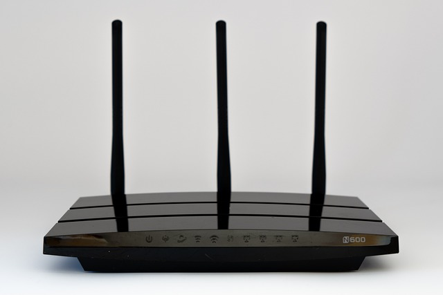

Radio Vision: How Wi-Fi and 5G Turn Walls Transparent
Listen to a 13-minute summary:
US Patent US11617100 B2: A Hidden Revolution in Wireless Surveillance.
Part 1 The Foundational Layer: Radio Waves as a New Sense
The myth of walls as privacy is already obsolete. In research labs at MIT, Carnegie Mellon, and behind classified doors at military contractors, radio waves have become a new kind of lens. The principle, hidden in plain sight, is simple: Wi-Fi signals, like all electromagnetic waves, don't just travel they scatter, reflect, and diffract, carrying information about the environment they traverse. This is not limited to Wi-Fi. It is a fundamental property of the radio frequency spectrum.
U.S. Patent US11617100 B2 offers a legal and technical blueprint for this. It claims a system using commodity Wi-Fi hardware to detect, map, and track human bodies in three-dimensional space, through walls, without optical cameras. While it's framed as a mundane "occupancy detection" or "elderly fall monitoring" tool, the technical truth is unambiguous: this is functional through-wall vision. This capability, once the stuff of science fiction, is validated in peer-reviewed experiments and replicable with off-the-shelf components.
The Physics: How Radio Becomes Vision
Radio waves in the 2.4 GHz and 5 GHz Wi-Fi bands, and critically, the higher frequencies used in 5G and 6G cellular networks, behave predictably in free space. But when they encounter human bodies water-rich, conductive tissues they scatter in unique patterns. When a router or a cell tower emits a signal, part of that energy bounces off a person, part is absorbed, and part continues on its path. By measuring the changes in amplitude and phase of these reflected signals at the receiver, a mathematical "fingerprint" of the scene can be reconstructed.
This is where the science deepens:
- Multi-path Propagation: In any environment, radio waves arrive at the receiver via multiple paths, having bounced off walls, furniture, and people. Every object subtly alters the timing and strength of these echoes. The more antennas in the system (MIMO Multiple Input Multiple Output), the more detailed this spatial map becomes.
- Doppler Shifts: Movement induces tiny frequency changes in the reflected waves. The rise and fall of a chest during breathing registers as a measurable ripple in the signal, a subtle tell of life.
- Signal Phase Analysis: By capturing phase differences across multiple antennas, spatial resolution improves dramatically, enabling the system to triangulate position with increasing precision.
What was once "noise" to be filtered out in communications engineering is now the signal itself.
The AI Layer: Turning Echoes into Outlines
In its raw form, this data is a turbulent ocean of numbers. However, when fed into a convolutional neural network (CNN) or a recurrent neural network (RNN) trained on motion capture data, patterns emerge. These models learn to translate interference patterns into human form much like a behavioral scientist learns to interpret gestures. There are no pixels; the "image" is a synthetic construct built from invisible echoes.
Researchers have demonstrated the ability to:
- Detect human silhouettes in real time.
- Recognize postures sitting, standing, walking, lying down.
- Identify gestures pointing, waving, picking up objects.
- Infer intent the "pre-motion" state before someone moves, based on micro-shifts in posture and weight distribution.
Limits That Won't Last
Today’s public demonstrations show coarse outlines, like a heatmap or ghostly mannequin. They don’t yet capture facial expressions or clothing color. But this is not a fundamental limitation it’s a signal processing and hardware ceiling that is rapidly being broken.
Three converging trends make higher fidelity inevitable:
- Chip Performance & Edge AI: Neural inference accelerators are shrinking in size and cost while delivering trillions of operations per second. Embedding such chips directly into routers, smart speakers, and especially 5G/6G small cells means the raw RF data can be processed in place, in real-time, without relying on slow cloud uplinks.
- Higher Frequency Bands: Wi-Fi 6E and especially 5G mmWave and upcoming 6G standards use 6 GHz+ channels. Higher frequencies mean shorter wavelengths, which improves spatial resolution akin to switching from AM radio to a laser beam.
- Data Fusion: Combining Wi-Fi reflections with other passive signals Bluetooth Low Energy, UWB (Ultra-Wideband), or even fluctuations in local electromagnetic noise multiplies the fidelity of the reconstruction.
The jump from blurry humanoid outlines to identifiable individuals is not a matter of "if" but "when." The bottleneck is no longer signal theory it's deployment strategy.
From Research to Operational Systems
- MIT’s CSAIL Lab pioneered RF-Capture, mapping human bodies through walls with 99% accuracy in identifying which part of the body moved.
- Carnegie Mellon extended the technique to track multiple people simultaneously, even when they crossed paths resolving them into separate, continuous trajectories.
- DARPA has funded related work under “non-cooperative imaging” and “sense-through-the-wall” programs, indicating battlefield applications: mapping enemy positions without line-of-sight.
And here’s the crucial shift: what starts as specialized hardware in defense contexts often becomes software-defined in civilian contexts. Once a commercial router has enough antennas, clock precision, and AI firmware, it no longer needs to be a military prototype it’s just an “advanced home automation feature.”
Part 2 The Surveillance Backbone: Infrastructure as the Trojan Horse
The public narrative paints surveillance as something done to you: a camera on a pole, a microphone in a smart speaker. What's harder to detect is surveillance done through you your own devices, your own network, and the urban infrastructure itself quietly re-tasked as the eyes and ears of an unseen system.
The Network as a Passive Sensor
The true engine of this new reality isn't the Wi-Fi router in your home; it's the 5G and 6G cellular grid blanketing our cities. This infrastructure is built with massive MIMO antenna arrays dozens or even hundreds of antennas on a single tower and operates on frequencies that offer high spatial resolution. Any device with:
- Multiple antennas (MIMO or massive MIMO)
- Precise clock synchronization
- High signal-to-noise capture
...can become part of a passive volumetric mapping grid; No cameras, no microphones and no permission prompts. The network itself becomes the sensor. The data from a cell tower can be fused with that from a passing ride-share car's hotspot, creating overlapping RF vision cones. At scale, this forms an urban-scale mesh imaging network without installing a single extra camera.
This is the central thesis: the infrastructure we are building for faster communication is a dual-use technology with an immense, unstated surveillance capability. The deployment of 5G and 6G is not just an upgrade in bandwidth it's the laying of the nervous system for a city-scale sensor network.
Hardware Backdoors: The Documented Precedent
This is not paranoia; hardware backdoors exist and the trail is public record.
- Supermicro Breach (2018) Bloomberg reported that Chinese spy chips, smaller than a grain of rice, were allegedly embedded in server motherboards destined for U.S. companies, allowing covert remote control.
- NSA’s ANT Catalog (2013) Leaked internal documents revealed implants and backdoors the NSA could place in hardware: from BIOS hijacks to RF-transmitting motherboard chips. Some could exfiltrate data even from air-gapped systems.
- Intel Management Engine (IME) A permanent, independent microcontroller inside every modern Intel CPU. Runs even when the PC is “off,” with direct access to memory, peripherals, and network interfaces. Cannot be disabled by the end user.
- Huawei Bans Behind the politics was the intent to prevent adversaries from embedding nation-state-grade surveillance hooks into 5G infrastructure.
Most backdoors are silent until triggered. This matters because it makes them plausible in consumer hardware no detectable latency, no visible change in operation, no obvious forensic trace.
Activation can occur via:
- Firmware updates (official or intercepted in transit).
- Configuration flags flipped remotely by authorized or compromised controllers.
- Covert RF triggers signal patterns designed to be recognized only by the hidden subsystem.
Once active, these can mirror traffic, inject payloads, or re-task RF systems for spatial mapping.
Quantum Computing: The Hidden Engine
Processing terabytes of ambient RF signal data in real time is a computational choke point for classical systems. Latency undermines utility; predictive use demands near-instant inference.
The quantum angle changes that:
- Microsoft’s Majorana-based topological qubits promise stable, scalable quantum processors.
- Google, IBM, and Chinese state labs have demonstrated quantum supremacy milestones, though public benchmarks may trail classified capabilities.
- D-Wave Systems has sold quantum annealers for optimization problems to defense and intelligence sectors for over a decade.
The operational gain: quantum processors can parallelize multidimensional inference at a scale classical machines choke on enabling continuous, city-wide processing of RF mapping data without lag.
This is the engine room for what will later become the god’s-eye simulation in Part 3 the point where surveillance isn’t just collected, but understood in real time.
PART 3 The Implications: Civilizational-Scale Vision Beyond Cameras
Once you accept that walls no longer guarantee privacy, the next step is understanding what happens when that loss is systematized.
It’s one thing for your router to map the outline of a person in your kitchen.
It’s another for every router in the city plus every smart speaker, every connected car, every lamp post hotspot to feed a single, unified model.
Citywide Volumetric Surveillance
When overlapping WiFi networks and dense 5G/6G coverage are fused, the result is continuous, real-time spatial reconstruction of entire urban interiors:
- Multi-node fusion allows blind spots in one sensor to be filled by another’s perspective.
- Behavioral tracking follows individuals across physical and network boundaries.
- Motion correlation across hundreds of points detects coordinated activity, crowd formation, or unusual patterns.
The city becomes a live simulation: breathing, shifting, archived for replay, searchable by time and location.
No Optics. No Consent.
Traditional surveillance debates focus on visible hardware a camera on a corner, a drone overhead. Here, there’s no lens, no shutter, no light.
- No need to install anything new.
- No “recording” light to warn you.
- No opt-in form.
It’s ambient infrastructure, re-tasked. The fact that it can see through walls is incidental to the system’s design but central to its value.
Military and Elite Implications
Once this infrastructure is in place, it’s functionally irreversible. That’s the civil liberties kill shot it’s not just dangerous, it’s permanent. For those who control the stack, this is not just about seeing. It’s about:
- Prediction using years of archived movement data to anticipate actions before they occur.
- Redirection altering flows of people and information to produce desired outcomes.
- Containment isolating individuals or groups physically and digitally.
This mirrors battlefield C4ISR doctrine (Command, Control, Communications, Computers, Intelligence, Surveillance, Reconnaissance), but scaled to civil governance.
DARPA-like agencies and sovereign tech funds are the quiet custodians of this pipeline moving sensing tech from special forces kits to street-level nodes.
The Centralized AI Command Layer
If this patent moves beyond the lab, its potential stretches far beyond simply “seeing through walls.”
Picture the raw feed from Wi-Fi vision outlines, movements, even objects not as isolated images, but as one layer in a vast, city-wide data fusion system.
Cell towers, CCTV cameras, public Wi-Fi routers, satellite imagery all feeding a central AI core, accelerated by NPUs capable of processing millions of movement patterns in real time.
The AI doesn’t just watch; it predicts highlighting unusual trajectories, flagging “statistical outliers” in human behavior, anticipating events before they happen.
In the right hands, it becomes the ultimate tool for counter-terrorism and emergency response.
In the wrong hands, it becomes something far darker: an all-seeing eye that doesn’t just monitor the city, but understands it and everyone in it.
Imagine a secured room deep in a government facility.
In the center, a full holographic rendering of an entire metropolis shimmers in the air, every building mapped, every street lit with moving points of light representing real people in real time.
Operators can zoom into a single apartment, follow a car from space to street level, or let the AI autonomously track a person of interest from Wi-Fi signature to CCTV facial match.
It’s The Dark Knight’s sonar system the one Batman used to find the Joker but rebuilt with modern machine learning, enhanced signal processing, and far clearer visual fidelity.
And the most unsettling part?
Unlike Gotham’s fictional sonar, this wouldn’t require a comic-book villain to justify its existence only the right mix of public fear, technological progress, and quiet government contracts.
The question isn’t whether it can be built.
It’s whether we’ll even know when it already has.